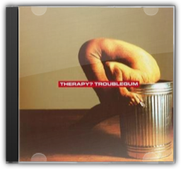

The Man Who
Travis
The Man Who
Travis


The ultimate slow-burner, Travis's second album infused its way into the psyche of post-Radiohead Britain with an endearingly humble grace. It's not quite certain how Travis went from being the happy-clappy Britpop also-rans of their debut Good Feelingto becoming the gifted pop craftsmen that moulded the gentle emotional trough of the chart-topping The Man Who, but it would seem that the tired, lonely lovelorn niche is one that suits Travis rather well. So, "Writing To Reach You", "Driftwood" and "Why Does It Always Rain On Me?" are the meekest songs to ever eat daytime radio alive. Elsewhere, "As You Are" sounds like Thom Yorke swaddled in blankets, and the closing "Slide Show" punctures rock mythology with an impossibly beautiful lyric: "There is no design for life/ There's no devil's haircut in my mind/ There is not a wonderwall to climb, or step around". —Louis Pattison  30 Something
Carter USM
30 Something
Carter USM
South London duo Carter USM combined an every-man appeal and a political idealism reminiscent of The Clash with a seamless cohesion of synthesised percussion, roaring post-punk riffs and razor-sharp, pun-drenched lyrics and 30 Somethingis their ultimate statement. As vocalist Jim Bob's fiery social conscience gets to grips with such burning issues as racial prejudice in the armed forces ("Bloodsport For All") and spousal abuse ("Sealed With A Glasgow Kiss"), Fruitbat's digitised wall-of-sound and heroic guitar assaults mercilessly steamroller the listener into submission. But the quality that most endeared Carter to their enormous UK fan-base was their uncanny ability to reflect the punch-drunk melancholia of the urban underdog. The bittersweet wallowing of "A Prince In A Pauper's Grave", the sorrowful regret of "Falling On A Bruise" and the ultimate dejection of "The Final Comedown" are quite simply towering, evocative genius. Way beyond essential, 30 Somethingis a 24-carat masterpiece. —Ian Fortnam  Kid A
Radiohead
Kid A
Radiohead
Radiohead may well be the most courageous band in Britain. Their second album, The Bends, was a success both critically and commercially, and they followed it up with an album of epic prog-rock, OK Computer, that would have destined a lesser band to commercial failure and, eventually, obscurity. Instead, it was almost universally hailed as one of the finest albums ever recorded. So it should come as no great surprise that their fourth album, Kid A, is even more experimental, owing a debt to the studio-born soundscapes of Brian Eno, Aphex Twin and even later Talk Talk. Kid Ais an album that would not sound out of place on the Warp Records roster, as keyboards, sequencers and electronic effects take the place of guitars on most tracks (particularly unusual for a band that boasts three guitarists). In fact, this is an album that succeeds without rock's bombast, from the looping keyboards of album opener "Everything In Its Right Place" to the bouncing, bass-led "The National Anthem" to the album's hauntingly atmospheric highlight, "Idioteque". Meanwhile, more traditional Radiohead tracks like "How To Disappear Completely" and "Optimistic" offer a natural bridge between the electronic noodlings of Kid Aand the (slightly) more mainstream-sounding OK Computer. Radiohead may well be the most innovative popular band since the Beatles; as such, Kid Arepresents the most successful evolution of a major British act since Sgt Pepper's. —Robert Burrow  Mission Impossible 2- Limited Edition
Various
Mission Impossible 2- Limited Edition
Various
"Der größte Soundtrack aller Zeiten zum größten Film aller Zeiten!" Von Superlativen geprägt war die erste Anzeige, mit der die Plattenfirma Appetit machte auf die CD zur zweiten Folge jenes perfekten Spionagestreifens, der 1996 vier Millionen Besucher in die Kino gelockt hatte. Ist der vollmundige Werbeslogan aber berechtigt angesichts der 17 Tracks, welche das neueste Abenteuer des Spezialagenten Ethan Hunt (Tom Cruise) und seines IMD-Teams untermalen, das erneut vor einem scheinbar unerfüllbaren Auftrag steht? Ein Killervirus soll sichergestellt und zerstört werden, bevor die andere Seite damit ein tödliches Spiel beginnt.  August and Everything After
Counting Crows
August and Everything After
Counting Crows
It's amazing the difference a year makes. Upon its release, August and Everything Aftersounded remarkably fresh, a welcome change from the crunch and screech of grunge. Blending the vocal athleticism of Van Morrison with the moody rock of The Band, the Counting Crows turned on a whole legion of fans turned off by modern rock. But what sounded fresh soon became stale as dozens of bands flocked to the radio with euthanised versions of the Counting Crows' sound. But you shouldn't hold that against the Crow boys. August and Everything Afteris a fantastic rock album. Though "Mr. Jones" was the money-maker, the disc features such stand-out cuts as the dark lilt of "Anna Begins", the morose "Rain King", and the outstanding U2-meets-Grant Lee Buffalo anthem "Murder of One". Maybe time, and another listen, will heal the damage wrought. —Tod Nelson  Xtrmntr
Primal Scream
Xtrmntr
Primal Scream

It's seldom that a band's sixth album is their best, but Exterminatoris nothing less than a radical new dawn. Only a few years before, Primal Scream seemed spent—a smack-addled joke, numbing the pain with the idle comfort of rock & roll cliché. Exterminatoris the Scream's baptism of fire—an album with a righteous social conscience, it rages against apathy and injustice with all the funk-fuelled indignation of Sly & The Family Stone's There's A Riot Goin' On. Musically, too, Exterminatoris shackled together with a coherence that's eluded them since 1991. From the tense industrial trance of "Swastika Eyes", to the scurvy-thin hip-hop of "Pills" and the exultant Krautrock of "Shoot Speed Kill Light", one minute the 'Scream are diseased and desperate, the next they're basking in glorious, righteous euphoria. Thank the guests, certainly—the Chemical Brothers, New Order's Bernard Sumner, My Bloody Valentine's Kevin Shields—but when you hear Bobby Gillespie screaming "from here to where?", on the hyper-distorted pedal-to-the-metal drag-race of "Accelerator", you'll know he's the one with the road map to a terrific rock & roll future. —Louis Pattison

Troublegum
Therapy
As implausible as it seems now, back in 1994, three scruffy heavy-metal fans from Belfast were tipped to take over Nirvana's crown. Therapy? had hit upon a genuinely thrilling mash-up of punk, metal, speed, volume, pop and lyrics of pure Rockney: try "Masturbation saved my life" or "I know how Jeffrey Dahmer feels—lonely, lonely" on your pencil-case and see what Amanda in Personnel says. Troublegumwas the band's mighty peak: "Screamager" rolls its sleeves up and gets on with the business of punching you repeatedly in the face with the power of rock;"Stop It You're Killing Me" has a triumvirate of power-chords that could stop Metallica in their steps, and by the time "Unrequited"'s thrown in its arse-kicking jazz time-signature and a minute of pure screaming—you'll be rejecting solids for a week. Class. —Caitlan Moran |


 Made with Delicious Library
Made with Delicious Library
Springfield, State zipflap congrotus delicious library Clancy, Liam